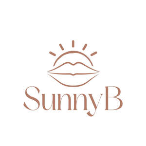

Trade Mark Journal No.2025/037 12 September 2025
UK00004247098 10 August 2025 (3,5,35)

- Class 3
- Tanning creams; Creams for tanning the skin; Sun-tanning lotions; Cosmetics for suntanning; Sun-tanning creams; Tanning gels [cosmetics]; Tanning oils [cosmetics]; Tanning preparations; Tanning milks [cosmetics]; Suntan lotions; Tanning preparations [cosmetics]; Sun-tanning creams and lotions; Sun tan lotion; Suntanning oil [cosmetics]; Cosmetic tanning preparations; Cosmetic suntan lotions; Suntan lotion [cosmetics]; Suntan creams [self-tanning creams]; Suntan creams; Self tanning preparations; Sun-tanning oils; Sun-tanning gels; Sun tan oil; Sun tan gel; Sun-tanning preparations [cosmetics]; Suntan oils [cosmetics]; Cosmetic sun milk lotions; Sun creams [for cosmetic use]; Suntanning preparations; Sun care lotions [for cosmetic use]; After-sun lotions; After-sun lotions [for cosmetic use]; Cosmetic sun-tanning preparations; Sun protecting creams [cosmetics]; Oils for moisturising the skin after sunbathing; Cosmetic suntan preparations; Cosmetic sun oils; Sun-tanning preparations; After-sun creams; Cosmetics for protecting the skin from sunburn; Lotions for the skin; Sun blocking lipsticks [cosmetics]; SPF sun block sprays; Self-tanning preparations [cosmetic]; Lip balm; Lip balms; Lip balm [non-medicated]; Lip cream; Lip gloss; Lip cosmetics; Lip pomades; Hair balm; Lip tints; Lip rouge; Lip neutralizers; Beauty balm creams; Lip protectors [cosmetic]; Skin balms (Non-medicated -); Non-medicated skin balms; Lip care preparations; Non-medicated lip care preparations; Balms (Non-medicated -); Skin cleansing cream [non-medicated]; Moisturising skin lotions [cosmetic]; Moisturising skin creams [cosmetic]; Lipstick; Skin cleansing cream; Skin cleansing lotion; Skin relief serum [cosmetic]; Skin lotion; Skin cream [for cosmetic use]; Moisturizing body lotions; Skin moisturizer; Sun protectors for lips; Skin moisturizer masks; Skin cream; Cleansing cream; Moisturising creams, lotions and gels; Scented body lotions and creams; Scented body creams; Skin recovery creams [cosmetics]; Cosmetic creams for dry skin; Facial cream [for cosmetic use]; Moisturizing preparations for the skin; Skin care creams [cosmetic]; Cosmetic creams for skin care; Skin moisturizers used as cosmetics; Cosmetic creams for the skin; Skin creams [cosmetic]; Skin creams [for cosmetic use]; Skin care lotions [cosmetic]; Hair lotion; Skin creams [non-medicated]; Non-medicated skin creams; Non-medicated cleansing creams; Skin moisturizers; Cream for whitening the skin; Whitening the skin (Cream for -); Non-medicated skin lotions; Facial moisturisers [cosmetic]; Facial butters; Body and facial creams [cosmetics]; Teeth whitening strips; Teeth whitening strips impregnated with teeth whitening preparations [cosmetics]; Teeth whitening preparations; Teeth whitening pens; Tooth whitening creams; Tooth whitening preparations; Tooth whitening pastes; Skin whitening preparations.
- Class 5
- Pharmaceutical skin lotions; Medicated lip balm; Medicated lip balms; Medicated lip care preparations; Medicated balms; Creams (Medicated -) for the lips; Foot balms (Medicated -); Skin relief serum [medicated]; Moisturising body lotion [pharmaceutical]; Hand lotion (Medicated -); Medicated skin lotions; Face cream (Medicated -); Skin care lotions [medicated]; Medicated skin creams; Medicinal creams for the protection of the skin; Medicated face lotions; Medicated brush-on oral care gels; Medicinal creams for skin care.
- Class 35
- Retail services in relation to sun tanning appliances.
Harry Galvin